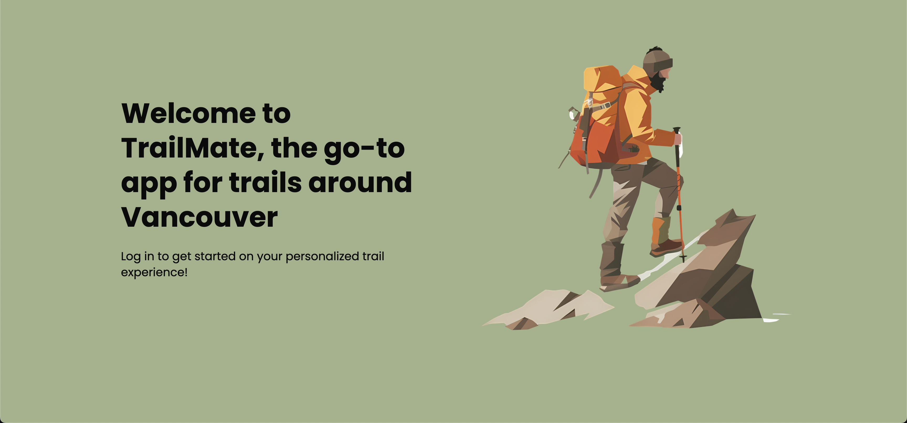
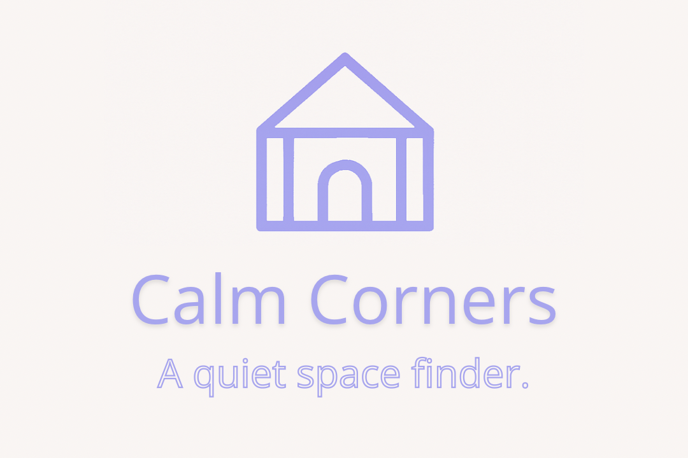

01Full-stack product · 2025
Trailmate
A hiking planner that helps people discover trails and prepare around weather, difficulty, gear, and live hazard reports.
React · Express · MongoDB · Google Maps · Docker
View project Aaron Ma
Aaron Ma
Vancouver, BC · Open to opportunities
A software engineer who builds thoughtful digital products at the intersection of people, data, and code.
02 / Selected work
Full-stack products shaped by real-world needs—from safer hikes to calmer study spaces.

01Full-stack product · 2025
A hiking planner that helps people discover trails and prepare around weather, difficulty, gear, and live hazard reports.
React · Express · MongoDB · Google Maps · Docker
View project
02
Data visualization · Full stack
Turns viewing-history data into personal trends, visual stories, and recommendations.
React · Django · PostgreSQL · D3.js
Wellness · Database systems
A mental-health activity app that recommends helpful routines based on how a person feels.
React · Express · Oracle · SQL

Desktop application
A Java desktop app for finding other players, built with test-driven development and local persistence.
Java · Swing · JUnit · JSON

Machine learning · Research
A k-nearest-neighbours model that classifies maternal health risk with 82% test accuracy.
R · tidyverse · ggplot2 · kknn
03 / About
I’m pursuing a second degree in Computer Science at UBC after studying Psychology and Commerce—an uncommon mix that shapes how I build.
At SAP, I built data workflows and led the development of a customer-success events dashboard for internal sales teams. Across my work, I care about asking better questions, making complex systems feel clear, and shipping things people can actually use.
Read my résuméFrontendReact, TypeScript, JavaScript, Tailwind
BackendNode, Express, Django, REST APIs
DataPostgreSQL, MongoDB, Oracle, R
ToolsGit, Docker, Mocha, JUnit
04 / Let’s connect